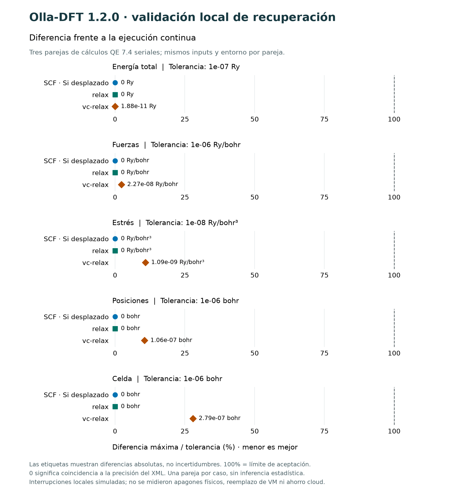

¿Cómo responde un material a la luz? ¿Qué cambia al comprimirlo? Olla-DFT ayuda a estudiar estas preguntas en una computadora y a convertir los resultados en gráficas que puedes explorar y compartir.
Olla-DFT organiza el trabajo con Quantum ESPRESSO, el programa que realiza las simulaciones de átomos y electrones.
Estas gráficas salen de ejemplos ya calculados. No necesitas entender cada símbolo: empieza por la pregunta y la explicación de cada tarjeta.
Bandas y DOS · silicio
¿Cómo se comportan sus electrones?
Las líneas muestran las energías que pueden tener los electrones en el silicio. Ayudan a estudiar su comportamiento electrónico, relevante para materiales usados en dispositivos.
Ver la gráfica y cómo leerla
Leer la gráfica: la separación entre grupos de líneas se llama «gap». Es una propiedad calculada; su valor depende del método utilizado.
Condiciones científicas del ejemplo
Ejemplo LDA; gap calculado de 0,52 eV. No equivale al gap experimental.
Este ejemplo de hierro separa dos grupos de electrones según una propiedad llamada espín. La diferencia entre ambos ayuda a estudiar el magnetismo.
Ver la gráfica y cómo leerla
Leer la gráfica: las curvas se dibujan a lados opuestos para distinguir los dos grupos. La parte inferior no representa una cantidad negativa de electrones.
Condiciones científicas del ejemplo
DOS resuelta por espín de un ejemplo ferromagnético. Canales opuestos por convención gráfica.
Al cambiar el volumen del silicio, cambia su energía. Esta curva ayuda a encontrar su tamaño de equilibrio y a estudiar cuánto se resiste a la compresión.
Ver la gráfica y cómo leerla
Leer la gráfica: los puntos son resultados calculados y la línea es un ajuste. La parte más baja señala el volumen preferido dentro de este modelo.
Condiciones científicas del ejemplo
Energía frente a volumen y residuos del ajuste Birch–Murnaghan. Ejemplo LDA.
Los átomos de un sólido pueden vibrar alrededor de sus posiciones. Este ejemplo muestra esas vibraciones en el silicio, una base para estudiar propiedades térmicas.
Ver la gráfica y cómo leerla
Leer la gráfica: cada curva representa una forma de vibración. Las alturas indican frecuencias, no el movimiento de un átomo a lo largo del tiempo.
Condiciones científicas del ejemplo
Dispersión y DOS de fonones. Ejemplo LDA, malla q de 2×2×2; no implica convergencia para otros materiales.
El ejemplo muestra cómo cambia la respuesta óptica del silicio según la energía de la luz. Ayuda a estudiar qué luz absorbe el material.
Ver la gráfica y cómo leerla
Leer la gráfica: las distintas curvas describen aspectos de esa respuesta. La estimación óptica mostrada no es el mismo valor que el gap electrónico de la primera tarjeta.
Condiciones científicas del ejemplo
Funciones ópticas del ejemplo: corrección scissor de 0,65 eV. El ajuste óptico mostrado no es el gap electrónico indirecto.
Son ejemplos de lo que la herramienta permite estudiar. No garantizan el mismo comportamiento en otros materiales ni sustituyen las comprobaciones de cada investigación.
02 / PRUEBA
Prueba cómo convertir resultados en una gráfica
Abrirás un ejemplo con ocho resultados ya preparados. Puedes cambiar su presentación y descargar una imagen sin instalar Olla-DFT, subir archivos ni ejecutar una simulación.
Mira el ejemplo
Cada punto corresponde a un resultado guardado. No es una animación de átomos.
Dale tu estilo
Abre «Personalizar presentación» y cambia el título, el color o el tamaño.
Guarda una imagen
Pulsa «PNG · imagen» para usarla en una presentación. «CSV · tabla» sirve para abrir los datos en una hoja de cálculo.
Esta prueba sirve para aprender a usar la interfaz. Sus puntos no forman una serie de experimentos comparables. Los cambios de presentación solo afectan a tu copia.
03 / CONTINÚA
Si un cálculo se interrumpe, ¿hay que empezar de cero?
Olla-DFT puede guardar puntos de continuación para ciertos cálculos. Si se conserva el disco y lo guardado es válido, permite retomar el trabajo al volver a arrancar.
Guardar
Conservar avances en un disco persistente.
Comprobar
Revisar que lo guardado esté completo y sea compatible.
Continuar
Retomar desde un punto válido cuando sea posible.
¿Qué comprobamos? En tres pruebas pequeñas, interrumpimos procesos y comparamos el resultado recuperado con el de una ejecución continua. Las diferencias quedaron dentro de los límites de aceptación definidos para esas pruebas.
Esto no garantiza recuperarse de cualquier apagón o de perder el disco.
Ver las pruebas, sus cifras y sus límites
Cómo leer esta figura: cada marca indica cuánto difiere un resultado recuperado del continuo. La línea del 100 % es el límite de aceptación; las marcas quedan por debajo. Un 0 significa coincidencia a la precisión registrada, no exactitud física absoluta.

QE 7.4 serial; una pareja SCF, una relax y una vc-relax, sin repeticiones estadísticas. Mismos inputs y entorno dentro de cada pareja. Se simularon cortes de procesos locales; no apagones físicos ni pérdida del disco.
El PDF reúne las gráficas y sus condiciones. Si quieres trabajar con tus propios materiales, el repositorio explica cómo instalar la aplicación y preparar los cálculos.


{kind=link}